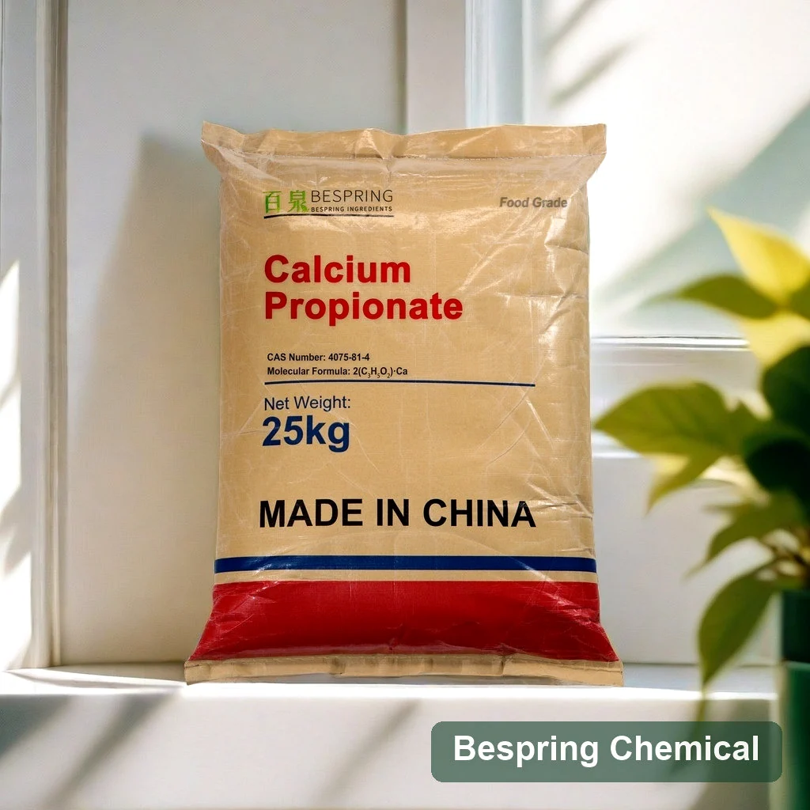
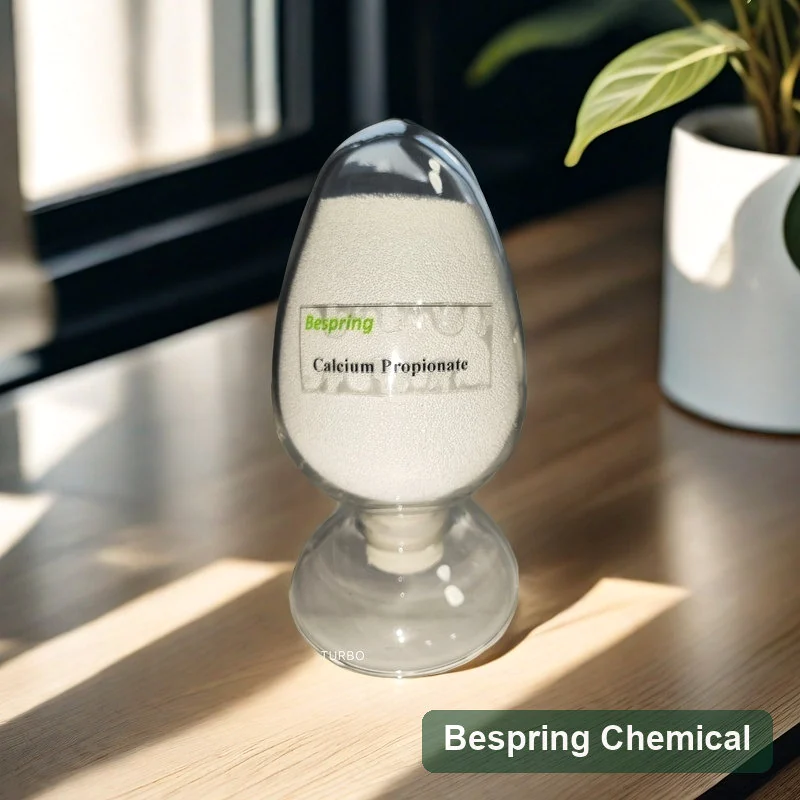
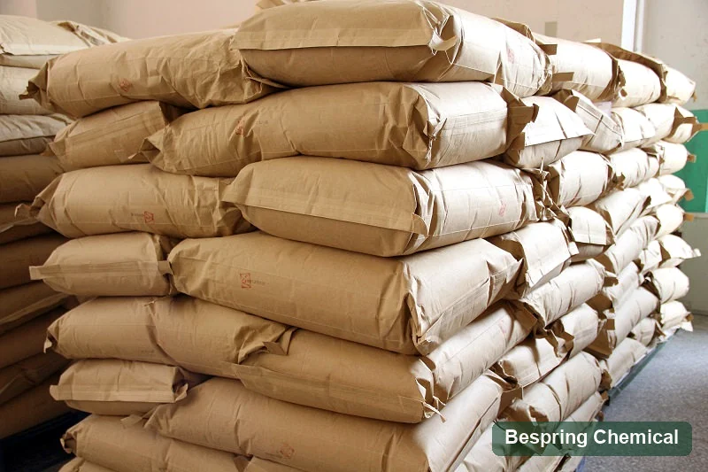
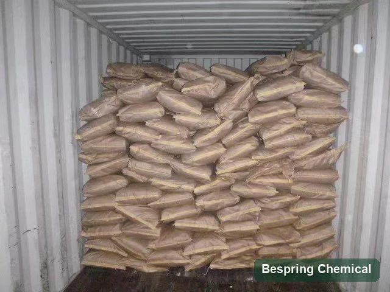

Propionato de calcio E282
Compruebe identidad alimentaria y desempeño en la receta prevista.
Ingrediente alimentario · Evaluación técnica B2B
Conservante para panificación cuya eficacia depende de la receta, el pH y las condiciones de almacenamiento.
Indique aplicación, cantidad, destino y documentos requeridos para evaluar una oferta concreta.

Identidad del producto
Es la sal cálcica del ácido propiónico, identificada como E282. Su función conservante se evalúa en la matriz alimentaria completa; identidad y dosis no garantizan por sí solas una vida útil concreta.
Opciones de grado
Aclare si la oferta corresponde a un producto estándar, un grado con requisitos FCC o una mezcla. Compare pureza, granulometría, método analítico y comportamiento en la masa antes de cambiar de fuente.
Compruebe identidad alimentaria y desempeño en la receta prevista.
Solicite la especificación y los métodos correspondientes al grado FCC.
Verifique composición, dosificación y comportamiento de la mezcla ofrecida.
Comparta pH, tipo de masa, envase y objetivo de vida útil.
Aplicaciones
Puede estudiarse en pan envasado, bollería y otras masas. La eficacia frente al deterioro depende de pH, actividad de agua, higiene del proceso, envase y condiciones de distribución.
Mida mohos y calidad sensorial durante la vida útil objetivo.
Revise fermentación, pH y estabilidad del producto terminado.
Pruebe eficacia con su humedad, envase y distribución.
Compruebe dispersión y estabilidad antes de usar la mezcla.
Ensayo de formulación
Mantenga constantes materias primas, fermentación, horneado, enfriamiento y envase. Compare un control con el producto propuesto y registre mohos, alteración por bacterias filamentosas, sabor y vida útil.
Registre pH, actividad de agua y composición de la receta.
Mantenga constantes mezcla, fermentación y horneado al comparar.
Controle contaminación posterior al horneado y tiempo de enfriamiento.
Incluya barrera de envase y temperaturas reales de transporte.
Evalúe el producto durante toda la vida útil prevista.
Datos de referencia
La tabla reproduce límites y resultados de ejemplo del material de referencia; no sustituye la especificación contractual ni el COA del lote.
| Parámetro de ensayo | Unidad | Especificación | Resultado de ejemplo |
|---|---|---|---|
| Ensayo | % | 99,0–100,5 | 99,51 |
| Agua | % | ≤ 4,0 | 3,2 |
| pH de solución acuosa al 10 % a 25 °C | — | 7,5–10,5 | 8,0 |
| Metales pesados (como Pb) | mg/kg | ≤ 10 | < 10 |
| Fluoruro (F) | % | ≤ 0,003 | < 0,003 |
| Materia insoluble en agua | % | ≤ 0,2 | 0,12 |
| Magnesio (como MgO) | % | ≤ 0,4 | < 0,4 |
Homologación de proveedor
Compruebe identidad, grado, límites de impurezas, métodos de ensayo, trazabilidad y documentación vigente de la planta y el producto ofrecidos.
Fotografías de referencia
Las imágenes ilustran formas de presentación y manejo. Las fotos sin etiqueta legible no acreditan producto, lote ni cantidad embarcada.



Almacenamiento
Mantenga el envase cerrado, seco y protegido de contaminación. Siga la ficha de seguridad y las condiciones del lote aprobado.
Consultas del comprador
La selección exige tanto revisión documental como validación en la fórmula y la cadena logística.
Se evalúa como conservante, especialmente en panificación, para ayudar a controlar mohos y otros deterioros.
La acción depende de pH, actividad de agua, higiene, envase y dosis; compruebe la vida útil en su receta.
E282 identifica el aditivo; una declaración FCC exige verificar la especificación y los métodos aplicables al grado ofrecido.
Consulte la composición y los criterios de aceptación de la mezcla concreta antes de homologarla.
Sí, solicite las versiones vigentes que correspondan al producto, origen y lote propuestos.
Indique aplicación, especificación, cantidad, embalaje, destino y documentos necesarios.
Recursos relacionados
Compare otros conservantes y guías de formulación sin asumir equivalencia de dosis o eficacia.
Consulta de suministro
Indique la aplicación, el grado, la cantidad, el país de destino y los documentos que necesita. Confirmaremos una oferta concreta.